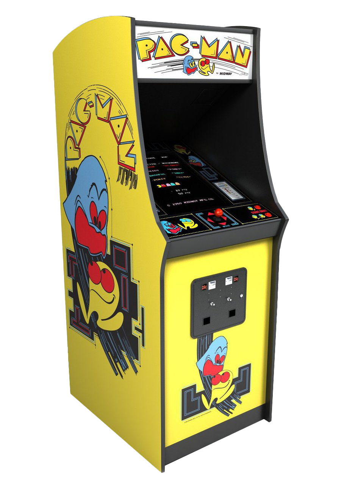
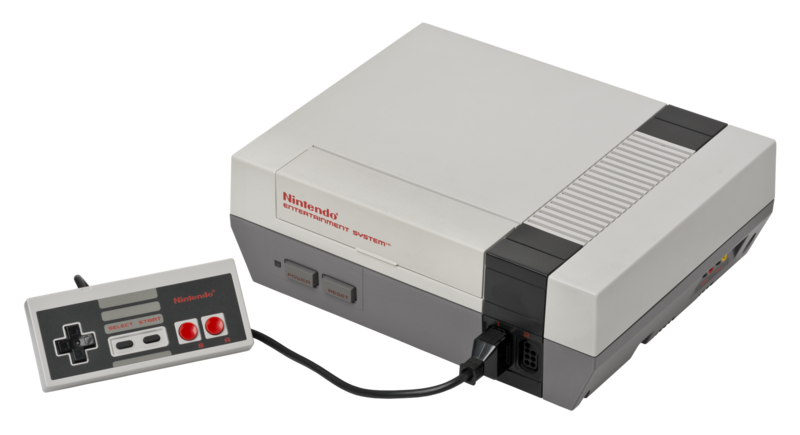
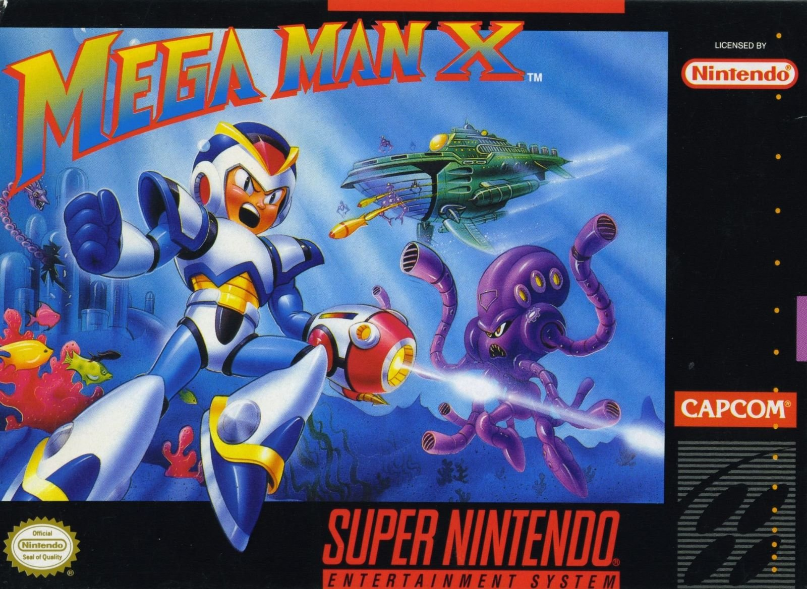

Games have not only changed physically. Back in the day, the entire mindset for "what makes a game" was different as well. In it's early days, game design was more of an afterthought if anything. Most games were played in Arcades, entertainment buildings full of fun games and prizes. Because of these locations, the games within them were only really designed to keep the user inputting coins into the machine.
This means the games had to meet only a few standards. They had to be simple, addicting, and most importantly, difficult. This was the effective strategy to keep consumers coming over and over. The harder a game was combined with the addicting short gameplay loop caused constant trips to the arcades, and saw them lots of success. Gaming stayed this way until some of the first home consoles came out, via Atari or Nintendo.

Fast forwarding a little bit, during the 90's is when games started finally growing out of that initial arcade phase. Yes, even video games at home had the same structure as a trip to the arcade, frustraiting difficulty and all. It was clear that this approach just wouldn't do for gaming as a whole. Now that the common family was owning a game station at their very own house, the cracks in the simple arcade market were starting to show. 80's video games would seem to have more substance on the outside, but playing the actual product would still result in a seeemingly meaningless points system, or levels that were so hard, they didn't feel playtested. These are all leftovers from the arcade gaming mentality. And it was time for the industry to start making their video games with something more to keep the player hooked.
The factor I think game design was missing, that was slowly being implimented throughout the 80's and 90's, is "progression". To showcase this I want to highlight one of my favorite games, that I think showcases progression very well.

Mega Man X is a Super Nintendo game released in 1993. In the game, your player character, the titular Mega Man X, starts out very weak. He has low health, a miniscule blaster, and a slow movement speed. This is not only true for Mega Man's physical moveset, but it's also shown in the story of the game as well. You are supposed to start out weak. As you progress through the game's many stages, you'll find upgrades that increase your defense, power up your shot, or even allow you to dash. Not only that, but each time you beat one of the game's many bosses, you obtain their weapon, expanding your arsenal.